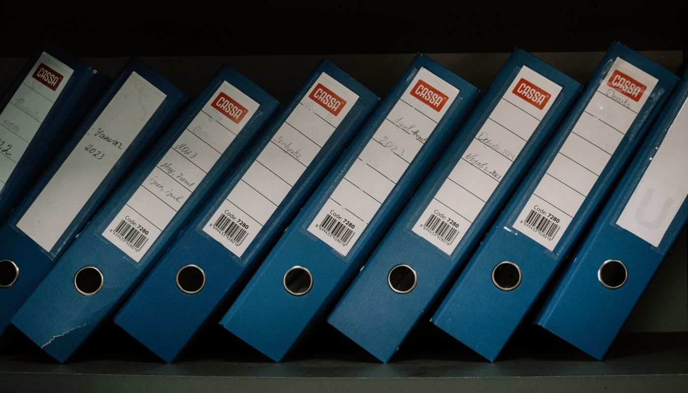

Independent · source-verified · checked 1 Oct 2026
Xero’s US prices went up on 1 October 2026. Export your data before you switch.
The Xero increase is small in dollars ($2–$7 a month) but real in direction, and it has accountants re-shopping their books. If you move, the risk is not the switch — it’s doing it without your data. Xero has no “download everything” button, and once you cancel, the organisation’s data is archived and you lose the ability to log in and export. This page is the boring checklist that gets your data out first.

No affiliate links (yet) — see how this works Companion to the price-increase guide
Why you export before you cancel
Two facts decide the order of operations:
- You export section by section. Xero’s own documentation (“Export data out of Xero” on Xero Central) describes separate exports for each area of the organisation — there is no single archive file that contains everything.
- Cancelling locks the door. Once a subscription is cancelled, the data is archived and you can no longer log in to download it; getting access back means reactivating (and paying for) the subscription. The exports happen while your account is still active.
So: export first, test the new tool in parallel, cancel last. A price increase is a nudge — a locked archive is a real cost.
What to export, and where in Xero it lives
| Data | Where in Xero | Format |
|---|---|---|
| Chart of accounts | Accounting → Advanced → Chart of accounts → Export | CSV |
| Contacts (customers & suppliers) | Contacts → All contacts → Export | CSV |
| Invoices | Business → Invoices → set status and date range → Export | CSV |
| Bills | Purchases → Bills → filter → Export | CSV |
| Products & services | Business → Products and services → Export | CSV |
| Bank transactions | Accounting → Bank accounts → open the account → Export statement (per account) | CSV |
| Fixed assets | Accounting → Advanced → Fixed assets → Export | CSV |
| Reports (P&L, balance sheet, trial balance, general ledger…) | Accounting → Reports → choose report → set period → Export | CSV / Excel / PDF |
Each export is a file of its own; run them per bank account and per date range you need. The paths above follow Xero’s documented interface and are linked in Sources.
The reports worth keeping (they’re hard to rebuild)
Beyond the CSV lists, a handful of reports carry information you cannot recreate from raw exports:
- Account Transactions — the complete list of every transaction; if you use multicurrency, keep all columns including FX.
- Receivable Invoice Detail — invoices, credit notes, overpayments and prepayments in one place.
- Payable Invoice Detail — the same for what you owe.
- Inventory Item List — item details and transaction history.
- Bank Reconciliation — the reconciled state of each account through your cutover date.
What will not transfer on its own
- Bank feeds. Feeds are live connections, not data. You reauthorize them in the new tool (most US banks via Plaid or a direct connection); authentication and first import usually take a few business days. Reconcile through your cutover date in Xero before you switch.
- Attachments and PDF invoices. Invoice data exports as CSV, but the attached files do not ride along — download them individually while your account is active.
- Repeating invoice and bill templates. Not exportable; rebuild them in the new tool.
- Anything with special characters. Unusual characters in transactions or contact records can make a CSV export fail — clean them and retry (Xero’s own guidance).
Before you cancel — 5 steps
- Reconcile every bank account through your cutover date in Xero. Exports capture what Xero shows — make sure what it shows is clean.
- Export per section (the table above) for the full date range you need, and run the five reports from the previous section.
- Spot-check the files: open a few CSVs and check dates, amounts and that nothing is truncated. Better now, while you still have access.
- Run the new tool in parallel for at least one full invoicing and reconciliation cycle. Set your opening balance in the new tool to match Xero’s ending balance at cutover.
- Only then cancel — after the parallel month validates the new books. Keep a local copy of every export (cloud plus local), organized by period.
Questions
Does Xero have an export-everything button?
No. Each section exports separately — chart of accounts, contacts, invoices, bills, products and services, bank transactions — and the reports you need come from the Reports screen. Xero Central’s “Export data out of Xero” series documents each one.
Can I download my data after cancelling?
No. Once cancelled, the organisation’s data is archived and you can no longer log in to download; regaining access means reactivating a paying subscription. Export while active, keep the account alive through the parallel month.
Do bank feeds transfer to my new accounting tool?
No — they are live connections, not files. You reauthorize them in the new tool, and feeds typically take a few business days to authenticate and start importing. Reconcile in Xero through cutover first.
Is switching really worth it for $2–$7 a month?
Often not, on its own. The honest math is in the price-increase guide: the increase is a nudge, not a verdict. If you do switch, this page is the part nobody regrets doing first.
How this page stays honest
- No affiliate links at launch. As of 1 Oct 2026, no link on this page pays us. If we join a partner program later, affected links will be labeled on the spot, and this box will state when it started.
- Export paths follow Xero’s own documentation (“Export data out of Xero” on Xero Central), linked in Sources. We describe the interface as documented, and say so where a detail varies by plan.
- No invented numbers. Where a behavior could not be confirmed, the page says exactly that instead of guessing.
- Spotted an error? Email us — corrections ship fast.
Sources
Check dates are stated per link. Export paths cross-checked 1 Oct 2026 against Xero’s official documentation and independent migration guides citing it.
- Xero — official support (hosts the “Export data out of Xero” series on Xero Central)
- Xero Central — official community & documentation
- Xero — official US pricing update page (change effective 1 Oct 2026)
- Related guide: Xero price increase (Oct 2026): what changed + alternatives
- Related guide: Invoice reminder tools (2026)
- Related guide: PDF data extraction without manual entry
- Related guide: Harvest & QuickBooks alternatives